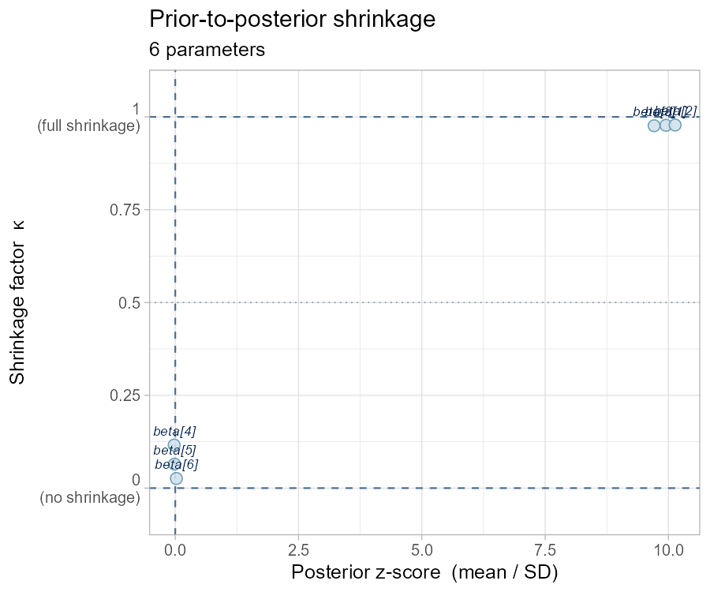
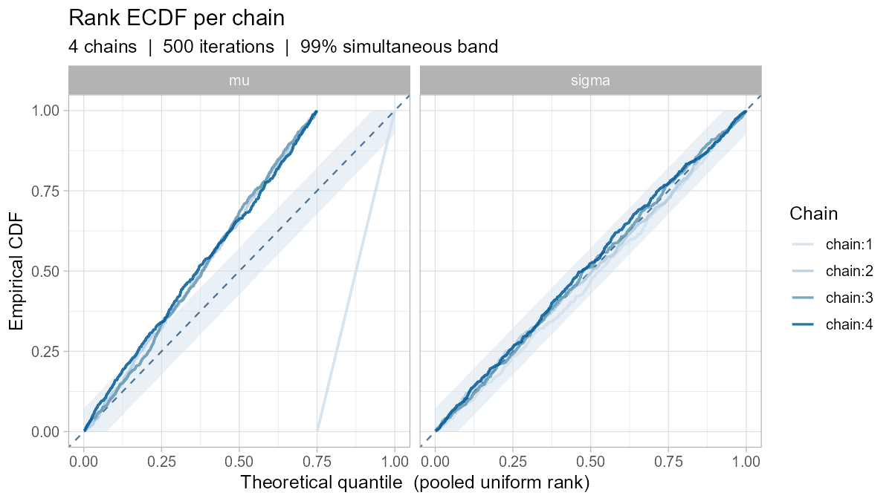
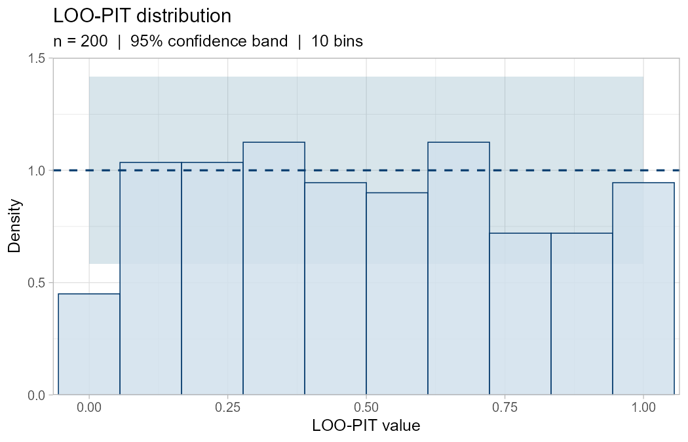
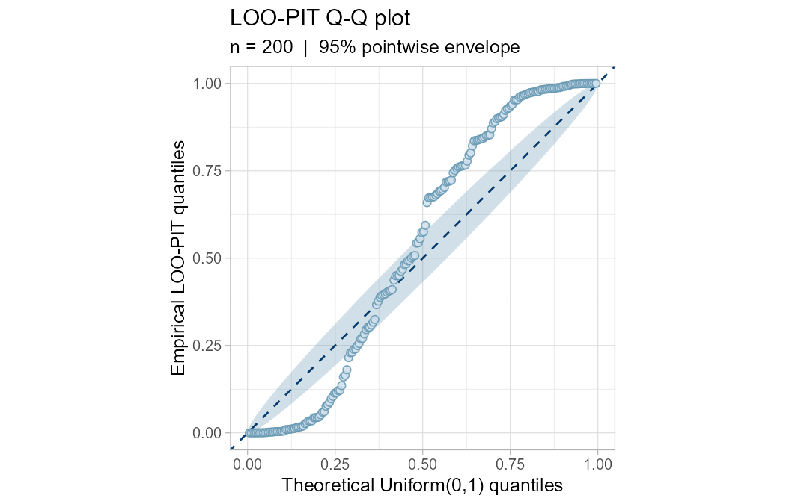
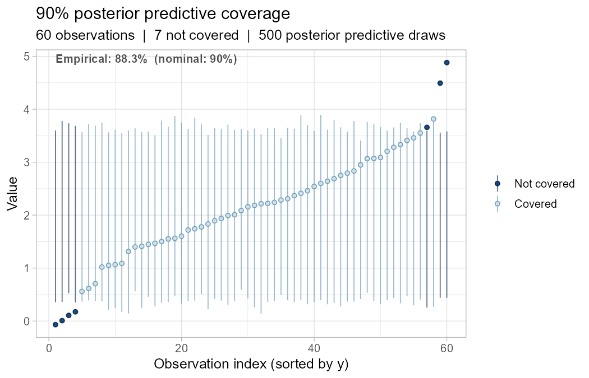

A prototype R package exploring extensions to bayesplot. Built as a hands-on exercise in Bayesian diagnostics and R package development — not a fork or replacement. All plots return ggplot2 objects and plug into bayesplot’s color scheme system.
Functions
| Function | Description |
|---|---|
mcmc_shrinkage() |
Prior-to-posterior shrinkage scatter — κ vs. z-score per parameter |
compute_shrinkage() |
Compute shrinkage factors from draws |
ppc_pit_hist() |
LOO-PIT histogram with binomial confidence band |
ppc_pit_qq() |
LOO-PIT Q-Q plot with Beta order-statistic envelope |
mcmc_rank_ecdf() |
Per-chain rank ECDF with simultaneous DKW confidence bands |
ppc_coverage() |
Observation-level posterior predictive coverage |
Installation
devtools::install_github("example/bayesvis")Dependencies: ggplot2, bayesplot, rlang, tibble
Examples
mcmc_shrinkage() — which parameters did the data actually inform?
set.seed(42)
library(bayesplot); library(bayesvis)
color_scheme_set("blue")
posterior <- matrix(
c(rnorm(1000 * 3, mean = 1.5, sd = 0.15), # well-identified
rnorm(1000 * 3, mean = 0.0, sd = 0.95)), # near-prior
ncol = 6
)
colnames(posterior) <- paste0("beta[", 1:6, "]")
mcmc_shrinkage(posterior, prior_sd = 1)
mcmc_rank_ecdf() — spotting a stuck chain without a trace plot
arr <- array(rnorm(500 * 4 * 2), dim = c(500, 4, 2),
dimnames = list(NULL, paste0("chain:", 1:4), c("mu", "sigma")))
arr[, 1, 1] <- rnorm(500, mean = 8, sd = 0.2) # chain 1 stuck
mcmc_rank_ecdf(arr)
Chain 1 (blue) rockets to 1 immediately for mu — all its draws have the highest ranks. The other chains are pushed below the diagonal. The grey band is a 99% simultaneous DKW envelope.
ppc_pit_hist() and ppc_pit_qq() — calibration from pre-computed LOO-PIT values
ppc_pit_hist(runif(200)) # well-calibrated
ppc_pit_qq(rbeta(200, 0.35, 0.35)) # over-dispersed

ppc_coverage() — does 90% really mean 90%?
y <- rnorm(60, mean = 2, sd = 1)
yrep <- matrix(rnorm(500 * 60, mean = 2, sd = 1), nrow = 500)
ppc_coverage(y, yrep, prob = 0.90)
Color schemes
All plots respect bayesplot::color_scheme_set():
color_scheme_set("red")
ppc_pit_hist(runif(200))Statistical references
- Piironen & Vehtari (2017). Shrinkage. Statistics and Computing. doi:10.1007/s11222-016-9649-y
- Vehtari, Gelman & Gabry (2017). LOO-PIT. Statistics and Computing. doi:10.1007/s11222-016-9696-4
- Vehtari et al. (2021). Rank ECDF. Bayesian Analysis. doi:10.1214/20-BA1221
- Gabry et al. (2019). Bayesian workflow visualization. JRSS-A. doi:10.1111/rssa.12378